研究问题
录制一条遥操作示范，需要机器人和操作员同时在场。人用手持夹爪也能演示如何抓取、移动和放置物体。哪些操作经验可以迁移，让人形机器人用更少的本体示范学会同一项任务？
方法原理
人类示范如何减少机器人数据需求？
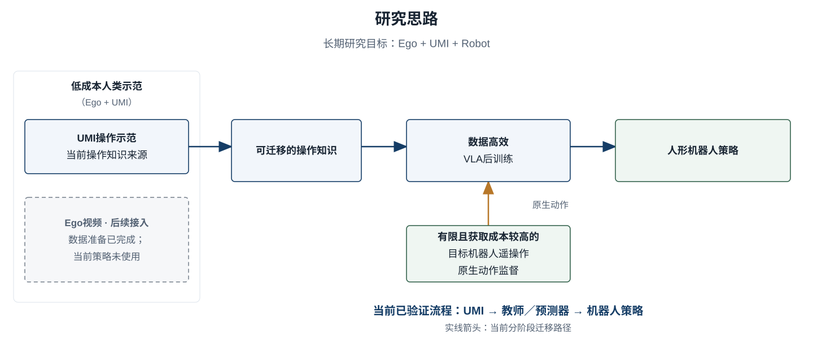
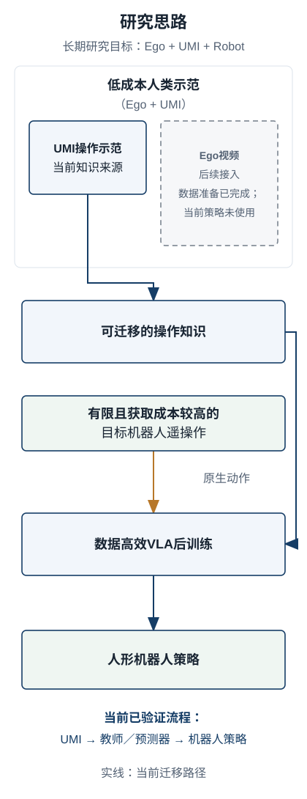
当前验证通过分阶段知识迁移使用 UMI 与 Robot 示范。Ego 已完成数据准备，是后续接入方向。
打开概念流程图打开概念流程图三阶段知识迁移
前两个阶段使用 100 条 UMI 示范学习操作知识，随后策略使用 50 条 Robot 示范完成后训练。
阶段 01
多尺度潜动作教师
观察UMI示范中操作前后的变化，学习可迁移的紧凑操作表示。
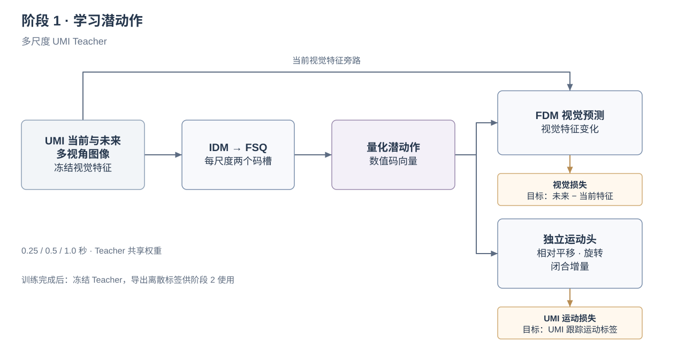
阶段概览
打开概念流程图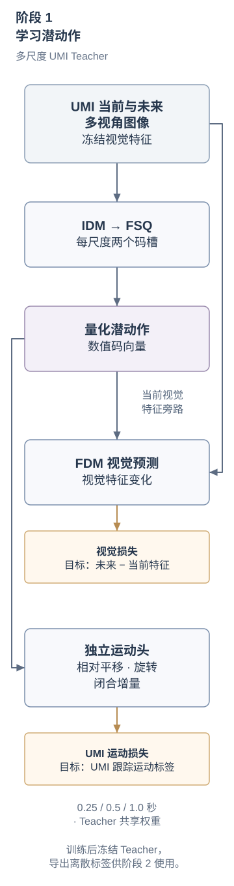
阶段概览
打开概念流程图阶段 02
当前观测潜动作预测器
只看当前画面预测操作编码分布，再将其转换为连续潜动作先验。
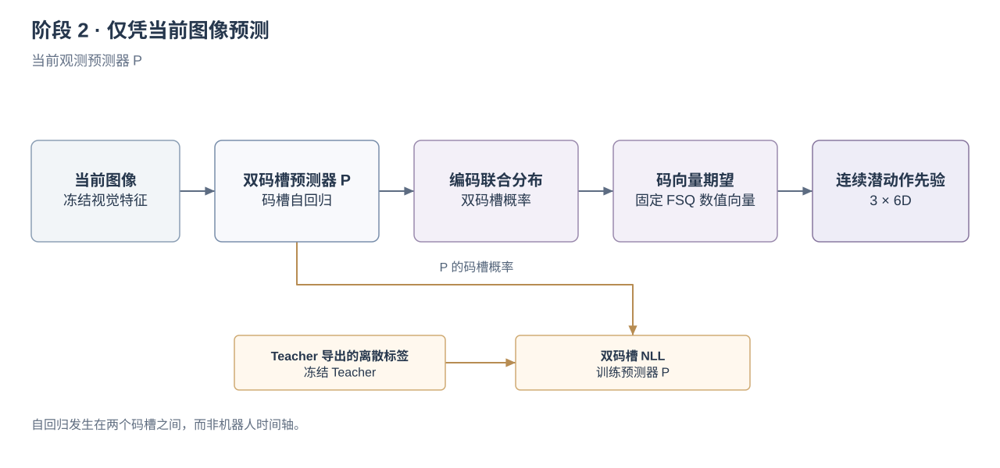
阶段概览
打开概念流程图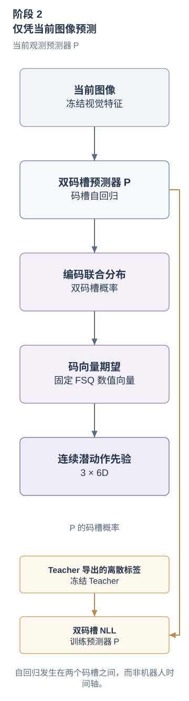
阶段概览
打开概念流程图阶段 03
先验引导的VLA后训练
把操作先验加入π0.5的视觉条件，再用目标机器人的示范完成策略后训练。
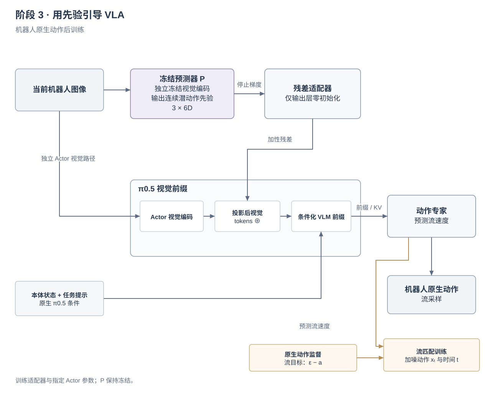
阶段概览
打开概念流程图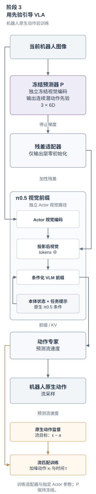
阶段概览
打开概念流程图查看技术细节
当前机器人图像进入两条独立视觉支路。先验在进入适配器前截断梯度；其2048维残差仅相加到有效视觉token。本体状态与任务提示通过原生前缀路径参与策略条件化。
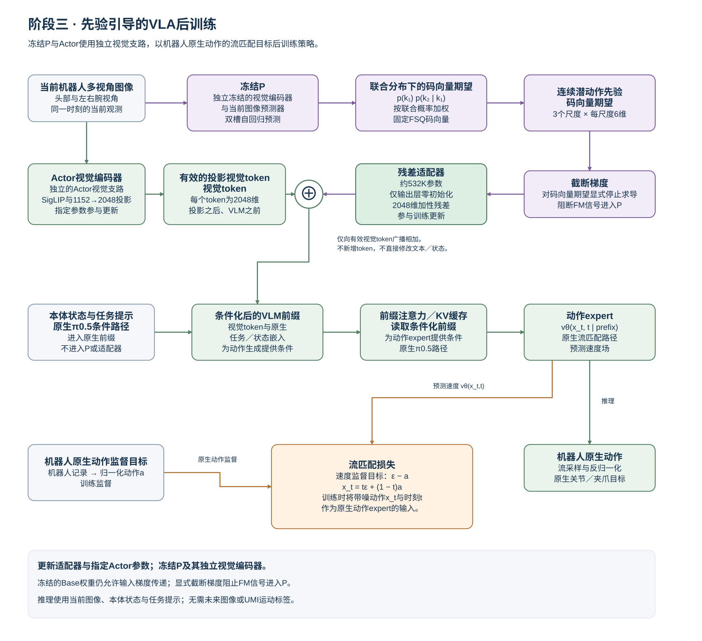
打开概念流程图
真机演示
桌面整理录像展示人形机器人重新摆放桌面物品，水果分拣录像展示它抓取并放置水果。两段录像均为策略在真机上的推理执行。

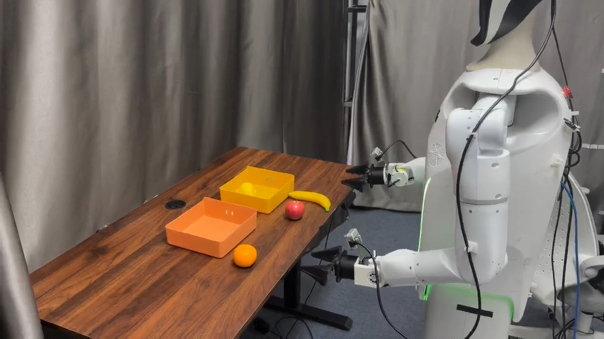
实验评估
同样使用 50 条机器人示范，LoCo-H2R-VLA 在桌面整理和水果分拣上分别取得 60% 和 80% 的成功率。仅使用这 50 条机器人示范训练的策略分别为 25% 和 50%。
| 配置 | Robot | UMI | 桌面整理 | 水果分拣 |
|---|---|---|---|---|
| LoCo-H2R-VLA | 50 | 100 | 60% (12/20) | 80% (16/20) |
| 仅 Robot R50 | 50 | 0 | 25% (5/20) | 50% (10/20) |
| 仅 Robot R100 | 100 | 0 | 35% (7/20) | 70% (14/20) |
| IK 映射 | 50 | 100 | 10% (2/20) | 20% (4/20) |
Robot 和 UMI 两列为训练示范条数。桌面整理每组进行 20 次真机试验，水果分拣每组进行 20 次。
数据采集与训练
我组织了三项任务的第一视角视频、UMI 示范和机器人遥操作数据采集，覆盖长程多步操作、抓取放置和精细对准。
我将示范统一整理为 20 Hz 的 LeRobot 数据集，并训练 ACT 与 π0.5 基线。
桌面整理 · 长程多步操作
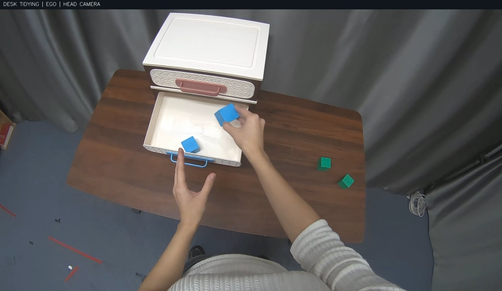

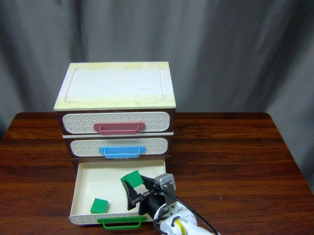
水果分拣 · 抓取与放置
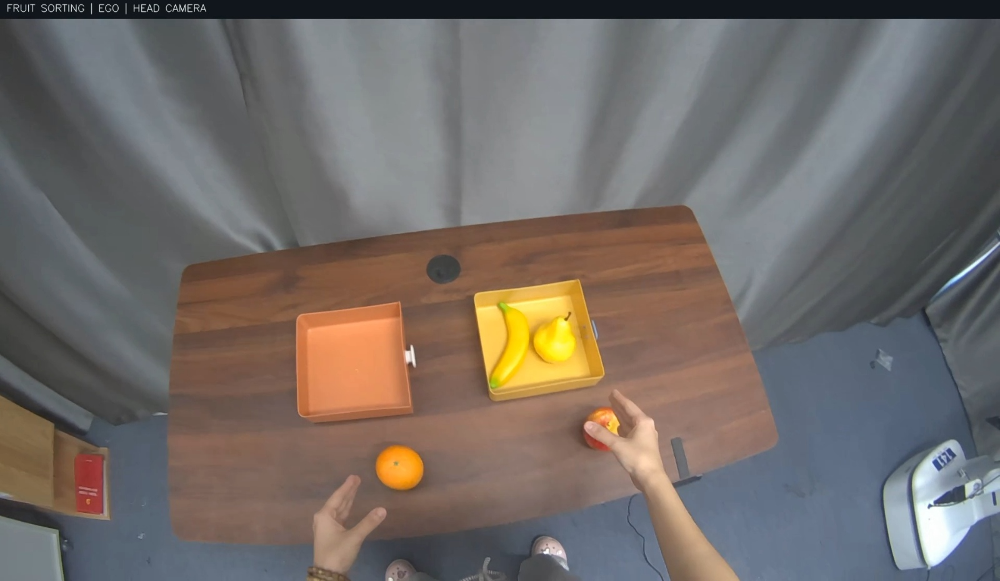
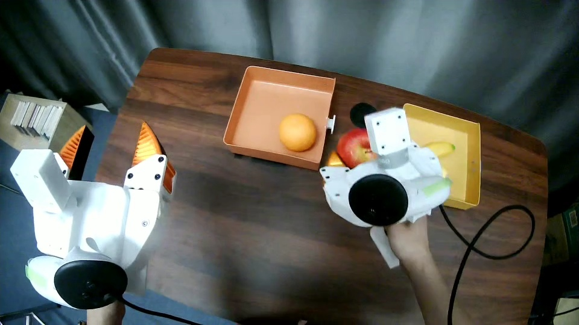

插头插接 · 精细对准与插入


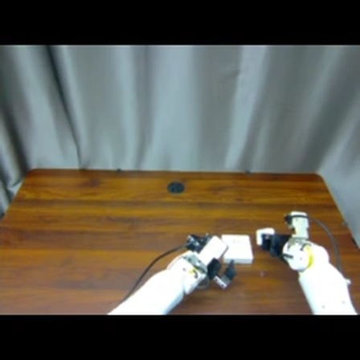
系统实现
在人形机器人上，我将多视角相机、本体状态与 20 Hz 的 ROS 2 控制回路接通。执行日志将控制指令与反馈对应起来，可用于追踪抓取或放置失败的环节。
个人贡献
我在清华大学电子工程系信息认知与智能系统研究所担任科研实习生，是 LoCo-H2R-VLA 的主要技术贡献者，负责学习方法与对照实验的设计和实现。
我搭建了异构数据处理流程，并组织三项任务的数据采集，负责人员招募、任务分配和训练数据准备。
我训练了基线策略，完成真机部署，并开发日志工具，在评测中对照控制指令与机器人实际运动，定位执行偏差。